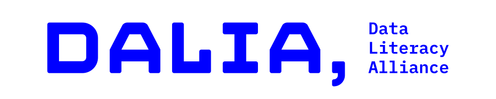

This web application runs entirely in your browser using WebAssembly. Structures you draw or paste are converted in your browser and are not sent to a server. The exception is the report form, which sends a structure you explicitly choose to report. Running everything locally comes at the cost that the initial loading might take a while, since the structure editor and the InChI libraries have to be downloaded first (they would otherwise live on a server). If the application behaves unexpectedly, try clearing your browser cache and reloading the page (CTRL + F5 in most browsers). Clearing the cache helps because an update might have changed files that are now in conflict with the files in your browser cache.
Acknowledgements
We'd like to express our gratitude to the developers of the open source projects we're depending on:
- We're rendering structures using the NGL Viewer (github.com/nglviewer/ngl, doi:10.1093/bioinformatics/bty419)
- We're using Ketcher as our structure editor (github.com/epam/ketcher)
Contact
If you have any questions, suggestions, or feedback, please reach out to us: inchi@ac.rwth-aachen.de. We especially encourage you to report problematic structures (please include a molfile along with a description of the problem). You can also submit an issue via our GitHub repository.
Funding
The development of this web application has been supported by the following organizations:

